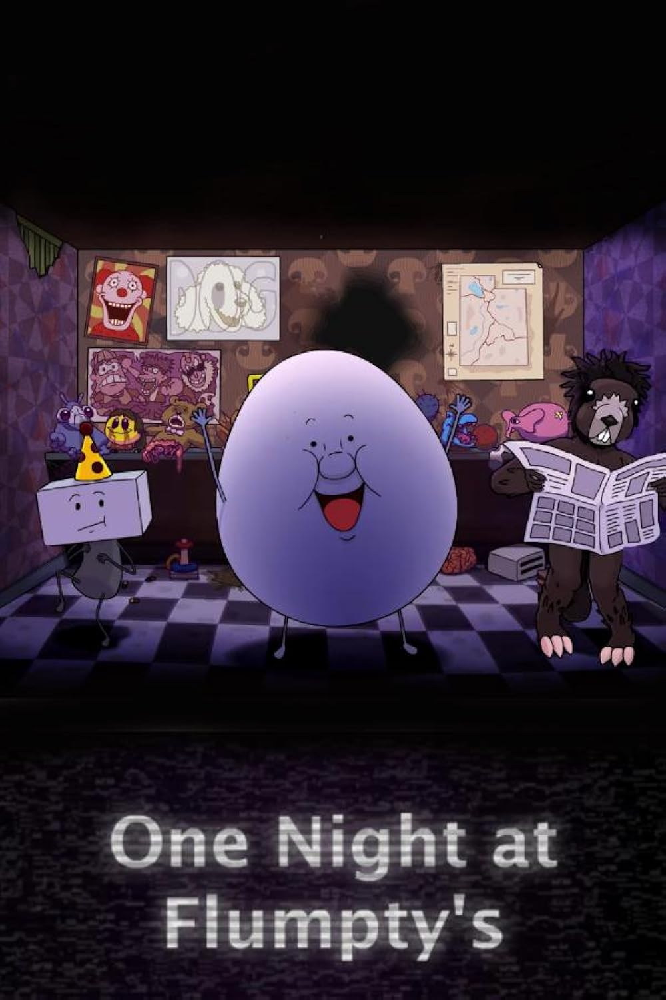

*One Night at Flumpty's* é um fan game de terror com uma abordagem mais cômica, criado por Jonochrome. O jogador deve sobreviver a uma noite inteira com o animatrônico Flumpty Bumpty e seus amigos bizarros.
O jogo é simples, mas com mecânicas desafiadoras, onde você deve monitorar câmeras e gerenciar o fornecimento de energia para sobreviver aos ataques de animatrônicos imprevisíveis e excêntricos.